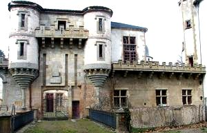
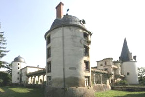
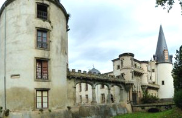
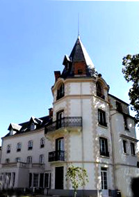
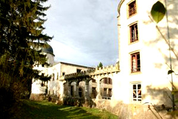
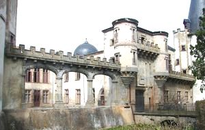
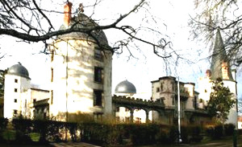
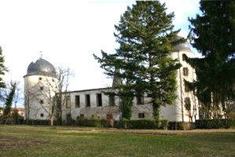

Recensement Jean-Claude Truffet
| Département | 63 — Puy-de-Dôme |
| Canton | Champeix |
| Commune | St-Cirgues-de-Couze |
| Type d'édifice | Château |
| Période d'origine | XV |








ST-CIRGUES, Austremoine Bohier naît à Issoire dans la première moitié du XVe siècle, secrétaire du roi Charles VII, il s'installe à Tours où il épouse Anne du Prat. Il achète, en 1460, le château et la terre de Saint- Cirgues. A la mort de Charles VII (1461), il reste le secrétaire de Louis XI, puis de Charles VII qui l'anoblit en 1490. Son fils Thomas est qualifié en 1494 noble homme maître Thomas Bohier, seigneur de St-Cirgues, conseiller, maître des comptes et secrétaire des finances du roi. Marié à Catherine Briçonnet. En 1496, il achète le château de Chenonceau en Touraine, quil reconstruit de 1515 à 1522. Il est maire de Tours en 1497. Son fils Antoine Bohier, baron de Saint-Cirgues, seigneur de Chenonceau, Chidrac, Périers, Pardines, Sauriers , Champeix, le Mas, la Tour Boyer, cédera Chenonceau à François 1er. Sans héritier, Antoine fait don de la baronnie de S t-Cirgues au connétable de France, Anne de Montmorency. En 1575, Henry 1er de Montmorency, fils dAnne, échange la seigneurie de St Cirgues contre un autre fief avec les Montboissier Beaufort Canillac, qui obtiennent en 1578 que la baronnie de Saint-Cirgues soit érigée en comté. Le dernier Montboissier meurt en 1725 sans héritier. Le château est acquis en 1732 par Yves de Tourzel d'Allègre. Les transformations au XVIIIe siècle sont effectuées par sa fille, Marie-Marguerite, marquise de Tourzel, qui épouse Philippe de Recourt-Lens-Licques-Boulogne, comte de Rupelmonde (Flandres) survivant 7 ans à son fils (tué en 1741), sans descendance, la comtesse de Rupelmonde entre dans les ordres et lègue ses biens aux enfants de sa sur, « la brune », Marie-Emmanuelle de Maillebois. Elle aura une fille, Marie-Henriette, mariée à Louis du Bouchet de Sourches. Leur fils, Louis François, épouse Louise Élisabeth de Croÿ, gouvernante des enfants de France. Cest par un fils de ces derniers, Yves , que le château passe à Hélène du Bouchet de Sourches de Tourzel. Elle se marie à Paul-Louis Marie Vogt dHunolstein. En 1889, il est encore propriétaire du château, appartient à Hervé dHunolstein. À noter que le frère aîné dHervé, Félix (1861-1952), a épousé une Montmorency.
Château de St-Cirgues rebâtit en 1495, un quadrilatère défendu par 4 tours rondes, des murs crénelés et un fossé, on doit au comte de Rupelmonde les dômes des tours et façades percées de larges ouvertures. Vers 1889 on remplace la clôture ouest par une arcature ouverte sur le parc et que lon aménage le décor intérieur dans le style troubadour, on ne connaît pas le nom de larchitecte. A la veille de la deuxième guerre mondiale, le château, fut remanié. En 1991, un incendie dévaste les toitures et une partie du décor. Linscription à linventaire supplémentaire, le 14 juin 2002, protège le château en totalité, y compris ses décors intérieurs (chapelle, escaliers, boiseries, cheminées) et le parc avec ses clôtures. Le château est en cours de restauration, en attendant un réemploi.
Famille de Montboissier Beaufort Canillac
"
Château de Saint-Cirgues